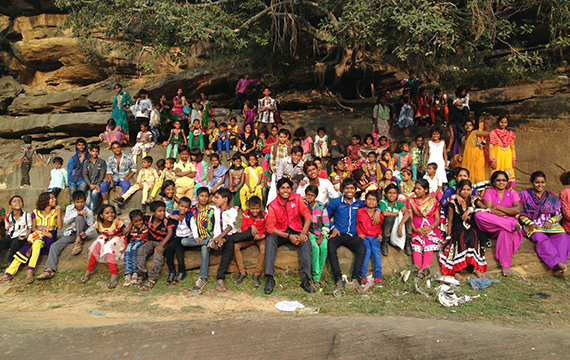
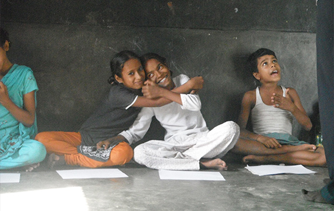
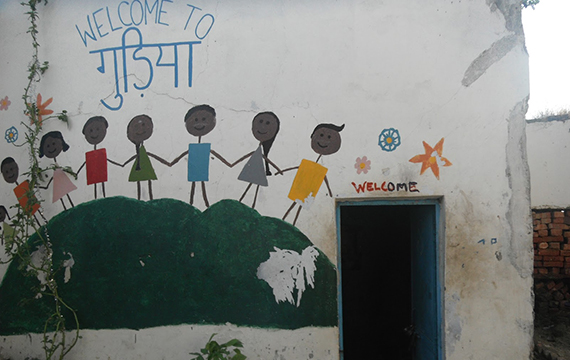

Help us save the girls!Do your bit to make a change.Help us make the world a better place.Uniting the masses to bring a change for the women
ABOUT US
OUR VISION
To fight against human trafficking and forced prostitution especially among women and children
OUR OBJECTIVES
To eliminate second generation prostitution
To prevent child prostitution and trafficking of women and children for forced labour, prostitution,
and other forms of sexual exploitation
To end sex tourism and discrimination in the name of HIV/AIDS
To empower women in prostitution to end their dependence on the criminal nexus that enslaves them
To advocate for improvements in government policy and law enforcement pertaining to trafficking and
prostitution
To ensure that justice is achieved for the victims of human trafficking through involvement in the
legal process
To support and rehabilitate survivors of trafficking, prostitution, and other forms of sexual
exploitation
To eliminate negative cultural attitudes and practices towards sex workers
To prevent human trafficking in vulnerable rural areas through livelihood support programs
HISTORY

Pioneered in the year 1993 by Ajeet Singh, Guria, a 36 member NGO in India, works towards fighting the
sexual exploitation of women & children, especially forced prostitution & sex trafficking which has
further become severe and complex due to sex tourism and spread of HIV/AIDS. The blue print of the
foundation was laid out way back in 1988 when Mr. Singh adopted three children of a woman from a red
light area. The milestone is astonishing as Mr. Singh was only 17 years of age. Guria
has fulfilled the absence of an organisation in India that works towards sex trafficking and
forced prostitution of women and children since its inception. What sets Guria apart from other
organizations is that not only do we strive to rescue victims, we also strive to fight the organized
prostitution racket completely. Over the years of its working, Guria has managed to develop a
multidimensional approach to fight sex trafficking successfully.
While responding to their immediate suffering we are focusing on the root causes of prostitution -
poverty and inequality. We strongly believe that it is not charity that is wanting in the world - it is
justice to make a humane world where all beings co-exist in harmony.
GOALS

Guria pursues a holistic grass-roots approach to achieve:
To prevent human trafficking /unsafe migration
To end child prostitution
To prevent second generation prostitution
STRATEGY

For Guria, prevention of second generation prostitution, ending child prostitution and preventing human trafficking/unsafe migration have never been isolated issues with simple isolated solutions. Rather we understand that an issue as complex and multi-dimensional as trafficking requires a holistic and multi-pronged approach with innovations as our hallmark. Broadly, Guria’s
approach is focused on eradicating the slavery of women and their children in brothels, which will be achieved by ending their dependency on the criminal nexus involving drugs, sexual exploitation, mafias, police, politicians, and, above all, the impunity enjoyed by all those criminally involved.
The break-up of the criminal nexus will depend on using the continued tools of education, health, availing government support programmes, vocational training, emotional support, dignity and protection of already victimized women and children from corrupt police and criminals, in order to ensure liberty to avail alternate opportunities. Guria’s strategies for ending child prostitution, preventing second generation prostitution and sex trafficking moves parallel and often cross cuts and supplements each other in a converged and synchronized manner. Also key to Guria’s strategy is the support of ageing and former victims of sex trafficking and forced prostitution as well as adolescents so that they themselves do not become vested interest or victims, respectively of such a complex situation.
Guria recognizes that overall the critical mass for a change and deterrence from attacks on activists will depend upon the mobilization of civil society and people’s participation at all levels within the source, transit and destination points of sex trafficking - whereby the likes of worldwide Freedom Now campaign and ensuring livelihood support have been very effective. To supplement this, Guria has taken up rescue and legal intervention to take things to a logical conclusion and avoid retrafficking. Considering the situation of the rule of law and delay in justice delivery we have also embarked upon successful innovations of providing victim-witness protection, brothel seizures and focusing on opposing fake victim custody and bails of traffickers. Other innovations are our strategies of converting grass-roots level interventions into Public Interest Litigations (PIL) and our 100 cases bi-annual report on police misconduct, to bring about a change at the policy level. Lastly, in the ever changing context of this organized crime, we experiment as we build up the movement against sex trafficking and child sexual exploitation.